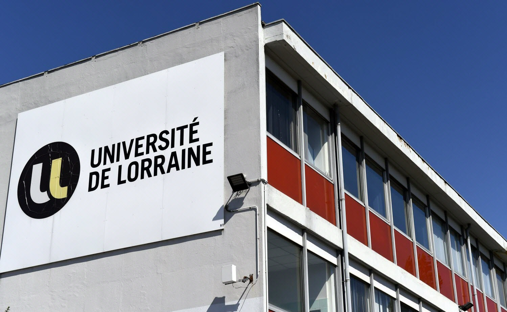
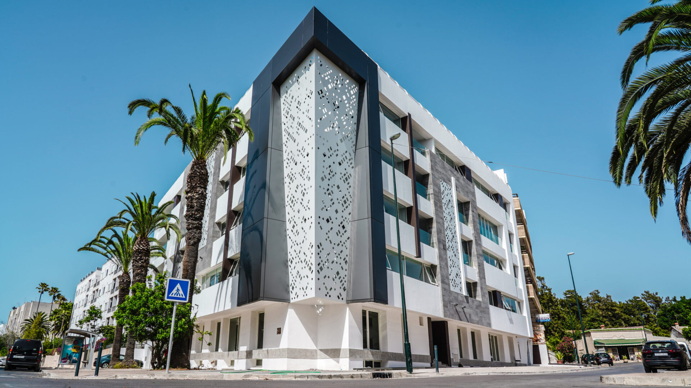
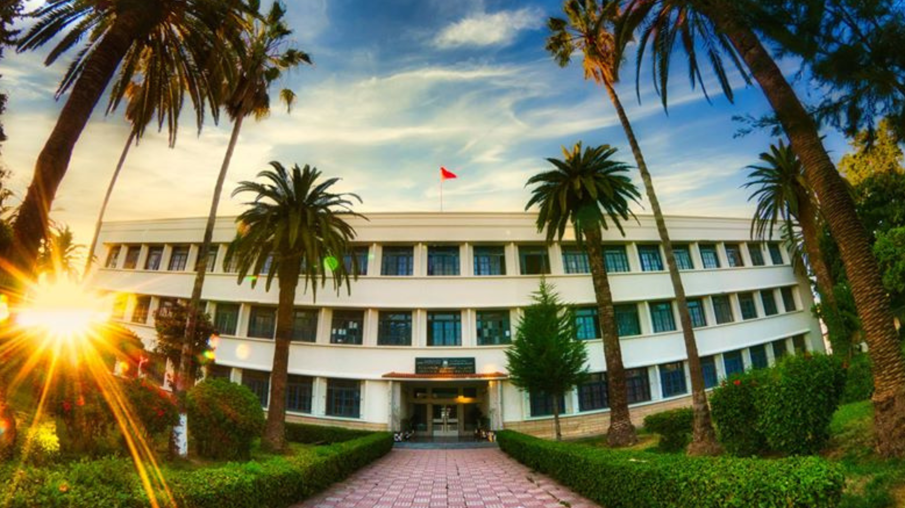

I have the ability to work independently with in-depth knowledge of different construction techniques and infrastructure works. Motivated and with good communication and analytical skills, I am ready to provide high quality service. I have been a civil engineering technician since 2018 and I became a civil engineer since 2021.
You can browse my portfolio starting with my education and trainings, my professional experiences and then my skills and projects.
November 16, 2021
University of Lorraine
FST NANCY
Master's degree in Structure, Materials and Building Energetics.

- BIM-REVIT
- BIM-Engineering of building structures
- Building envelope and environment / Building energetics
- Building simulation and control
- Timber construction, HQE building
- Project Management
Skills: Building Information Modeling (BIM) · Revit · Abaqus · Mathlab

State engineer diploma in civil engineering and public works - EMSI Rabat.
- Structures, Materials & Hydraulics and sanitation
- Infrastructures
- Reinforced concrete and structural calculations
- Construction Site Management
- General construction procedures
- Construction Estimating
- Civil engineering softwares
- Construction Drawings
- Building Design
- Laboratory Skills
- 3D Rendering
Skills: Lumion · Laboratory Skills · General construction procedures · Construction Estimating · Covadis · Internet Access · RDM7 · Reinforced concrete and structural calculations · Presentations · AutoCAD · Computational Fluid Dynamics (CFD) · Twinmotion · Revit · Communication · 3D Rendering · piste · Construction Site Management · Construction Drawings · ST1 · Building Design · Soft Skills · Autodesk Robot Structural Analysis · ArcGis

Higher Technician Certificate: Building Option - BTS Rabat.
- Testing of materials in the laboratory or on the construction site
- Economic study and budgeting
- Site management, management and control
- Topography
- Perform footage functions
- Standards relating to housing
- Quality and safety approach
- Schedules
- Architectural drawing
Skills: Lumion · Laboratory Skills · General construction procedures · Construction Estimating · Internet Access · Reinforced concrete and structural calculations · Presentations · AutoCAD · Construction Site Management · Construction Drawings · Topography
Baccalaureate: Electrical Science option - Les Orangers High School of Rabat.
- Acquisition, processing and communication of information
- Power supply, distribution and energy conversion
- Power transmission
- Practical activities and projects
- Technical drawing
- Functional analysis
- Programmable logic circuits
- Three-phase system
- Receptor groupings
- Electromechanical and hydraulic converters
- Microcontrollers
Skills: Zelio Soft (Schneider Electric) · Pascal · coding of information (Codes: pure binary, GRAY, BCD and ASCII) · Conversion between (decimal, binary, hexadecimal system) · programmable circuits (PLD) · GRAFCET · Presentations · Industrial Programmable Automate (IPA) · Human machine interfacing (HMI)